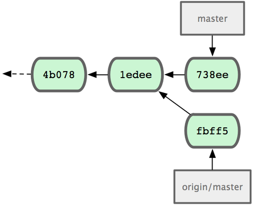
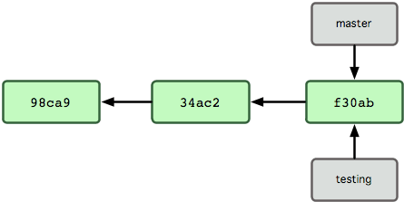
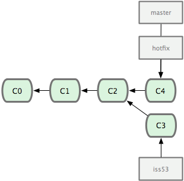
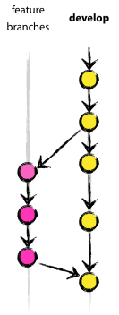

Practical Git
Hei
Credits
GIT 101
The Basics
Why Git?
Source code control the way it was meant to be!
Distributed Version Control System

Branch is first class citizens
Security

Performance
Create a new repo
git init
Clone an existing repo from server
git clone <repo_url>
Record changes

Check status
git status
$ git status
On branch master
nothing to commit, working directory clean
$ vim README
$ git status
On branch master
Untracked files:
(use "git add <file>..." to include in what will be committed)
README
nothing added to commit but untracked files present (use "git add" to track)Add file to staging area
git add <file_path_or_glob>
$ git add README
$ git status
On branch master
Changes to be committed:
(use "git reset HEAD <file>..." to unstage)
new file: READMECommit
git commit
View History
git log --oneline --graph --all
$ git log --oneline --graph --all
* 0fb3281 Added a proposal on database schema
* 1e24ffb Added sphinx documentation
* b0f364c Added requirements for third-party dependencies
* d432bb1 Fixed typo on get_childern and build_tree
* 5fff5dc Use serializer to render section list response
* ebeefd9 Authenticate with JSON Web Token
* 5e4cd8e fixed create page radio button
* 8d5961a added radio button for privacy setting in create page
* e4f47ee Added fake fork
* bc1e57a Added funny story
* 69c438c Added some fake books
* ffe08b6 Added text editor
* abcd5db added projectservice
* 12e0a7c Merge branch 'master' of github.com:williampuk/negative-time
|\
| * b44e78f Added home redirect
* | d94d893 changed manage page
|/
* 00a326e Added summary for project
* d6d32d9 Added user reterive view
* ae70965 Fixed not sitting cookies on login
* e05f844 Added list sections API
* be9b39e add manage tab
* 5ca7589 add create tab template
* bcf3392 Restructured folders and files
* e6495f4 discover page with 3x3 grid layout
* 4b0e9c1 Added directive for enter key for login
* 3713294 changed the style and changed the form ajax post
* 57bb48f Added real login views
| * e2ca6fb add create tab template
| * 023f5cc discover page with 3x3 grid layout
| * 29eedeb changed the style and changed the form ajax post
| * 6489da4 changed again params to test login
| * 4dd135c changed params to test login:
| * 3a0bc65 Added real login views
|/
* 237441c Added user sign in
* 3be7fe2 full webapp structure
* 827d034 Added list projects API
* b6500dd Added create project API
* 0865edd Added login api
* 3a294ff Added static dirs
* 21d0eb5 Added static files
* 61c780b Base Django project
* 78a4291 Initial commitTips
git config --global alias.gr "log --graph --all
--format=format:'%C(bold blue)%h%C(reset) - %C(bold
green)(%ar)%C(reset) %C(white)%s%C(reset) %C(bold white)—
%an%C(reset)%C(bold yellow)%d%C(reset)' --abbrev-commit
--date=relative"
$ git gr
* 0fb3281 - (10 weeks ago) Added a proposal on database schema — Hei (origin/db_schema)
* 1e24ffb - (10 weeks ago) Added sphinx documentation — Hei (HEAD, origin/master, origin/HEAD, master)
* b0f364c - (2 months ago) Added requirements for third-party dependencies — Hei
* d432bb1 - (2 months ago) Fixed typo on get_childern and build_tree — Hei
* 5fff5dc - (2 months ago) Use serializer to render section list response — Hei
* ebeefd9 - (2 months ago) Authenticate with JSON Web Token — Hei
* 5e4cd8e - (3 months ago) fixed create page radio button — William Puk
* 8d5961a - (3 months ago) added radio button for privacy setting in create page — William Puk
* e4f47ee - (3 months ago) Added fake fork — Hei
* bc1e57a - (3 months ago) Added funny story — Hei
* 69c438c - (3 months ago) Added some fake books — Hei
* ffe08b6 - (3 months ago) Added text editor — Hei
* abcd5db - (3 months ago) added projectservice — William Puk
* 12e0a7c - (3 months ago) Merge branch 'master' of github.com:williampuk/negative-time — William Puk
|\
| * b44e78f - (3 months ago) Added home redirect — Hei
* | d94d893 - (3 months ago) changed manage page — William Puk
|/
* 00a326e - (3 months ago) Added summary for project — Hei
* d6d32d9 - (3 months ago) Added user reterive view — Hei
* ae70965 - (3 months ago) Fixed not sitting cookies on login — Hei
* e05f844 - (3 months ago) Added list sections API — Hei
* be9b39e - (3 months ago) add manage tab — David (origin/manage)
* 5ca7589 - (3 months ago) add create tab template — David
* bcf3392 - (3 months ago) Restructured folders and files — William Puk
* e6495f4 - (3 months ago) discover page with 3x3 grid layout — David
* 4b0e9c1 - (3 months ago) Added directive for enter key for login — William Puk
* 3713294 - (3 months ago) changed the style and changed the form ajax post — William Puk
* 57bb48f - (3 months ago) Added real login views — Hei
| * e2ca6fb - (3 months ago) add create tab template — David (origin/create)
| * 023f5cc - (3 months ago) discover page with 3x3 grid layout — David (origin/discover)
| * 29eedeb - (3 months ago) changed the style and changed the form ajax post — William Puk
| * 6489da4 - (3 months ago) changed again params to test login — William Puk
| * 4dd135c - (3 months ago) changed params to test login: — William Puk
| * 3a0bc65 - (3 months ago) Added real login views — Hei
|/
* 237441c - (3 months ago) Added user sign in — William Puk
* 3be7fe2 - (3 months ago) full webapp structure — William Puk
* 827d034 - (3 months ago) Added list projects API — Hei
* b6500dd - (3 months ago) Added create project API — Hei
* 0865edd - (3 months ago) Added login api — Hei
* 3a294ff - (3 months ago) Added static dirs — William Puk
* 21d0eb5 - (3 months ago) Added static files — William Puk
* 61c780b - (3 months ago) Base Django project — Hei
* 78a4291 - (3 months ago) Initial commit — William PukBranching

$ git branch testing

$ git checkout testing
$ vim test.rb
$ git commit -a -m 'made a change'
$ git checkout master
$ vim test.rb
$ git commit -a -m 'made a change'
Merging

$ git checkout master
$ git merge hotfix
Updating f42c576..3a0874c
Fast-forward
README | 1 -
1 file changed, 1 deletion(-)
$ git branch -d hotfix
Deleted branch hotfix (was 3a0874c).$ git checkout iss53
Switched to branch 'iss53'
$ vim index.html
$ git commit -a -m 'finished the new footer [issue 53]'
[iss53 ad82d7a] finished the new footer [issue 53]
1 file changed, 1 insertion(+)
$ git checkout master
$ git merge iss53
Auto-merging README
Merge made by the 'recursive' strategy.
README | 1 +
1 file changed, 1 insertion(+)

$ git branch -d iss53Remote Branches

Pushing
$ git push origin serverfix
Counting objects: 20, done.
Compressing objects: 100% (14/14), done.
Writing objects: 100% (15/15), 1.74 KiB, done.
Total 15 (delta 5), reused 0 (delta 0)
To git@github.com:schacon/simplegit.git
* [new branch] serverfix -> serverfix$ git fetch origin
remote: Counting objects: 20, done.
remote: Compressing objects: 100% (14/14), done.
remote: Total 15 (delta 5), reused 0 (delta 0)
Unpacking objects: 100% (15/15), done.
From git@github.com:schacon/simplegit
* [new branch] serverfix -> origin/serverfix$ git checkout -b serverfix origin/serverfix
Branch serverfix set up to track remote branch serverfix from origin.
Switched to a new branch 'serverfix'Deleting Remote Branch
$ git push origin :serverfix
To git@github.com:schacon/simplegit.git
- [deleted] serverfixGIT 201
The Workflow
A successful Git branching model

Decentralized but centralized

Main branches - master & develop

Feature branches

May branch off from: develop
Must merge back into: develop
Branch naming convention: anything except master, develop, release-*, or hotfix-*

Release Branch
May branch off from: develop
Must merge back into: develop and master
Branch naming convention: release-*
Hotfix branches

May branch off from: master
Must merge back into: develop and master
Branch naming convention: hotfix-*
GIT 301
The Advance Features
add --patch
Change last commit
git commit --amend
Reset

Rebase
$ git checkout feature
$ git rebase master